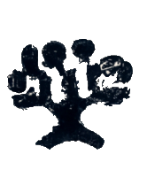

Leaves Average Characteristics
avg_characteristics_rpart.RdComputes the average characteristics of units in each leaf of an rpart object.
Value
A list storing each regression as an lm_robust object.
Details
avg_characteristics_rpart regresses each covariate on a set of dummies denoting leaf membership.
This way, we get the average characteristics of units in each leaf, together with a standard error.
Leaves are ordered in increasing order of their predictions (from most negative to most positive).
Standard errors are estimated via the Eicker-Huber-White estimator.
References
R Di Francesco (2022). Aggregation Trees. CEIS Research Paper, 546. doi:10.2139/ssrn.4304256 .
Examples
## Generate data.
set.seed(1986)
n <- 1000
k <- 3
X <- matrix(rnorm(n * k), ncol = k)
colnames(X) <- paste0("x", seq_len(k))
D <- rbinom(n, size = 1, prob = 0.5)
mu0 <- 0.5 * X[, 1]
mu1 <- 0.5 * X[, 1] + X[, 2]
y <- mu0 + D * (mu1 - mu0) + rnorm(n)
## Construct a tree.
library(rpart)
tree <- rpart(y ~ ., data = data.frame("y" = y, X), maxdepth = 2)
## Compute average characteristics in each leaf.
results <- avg_characteristics_rpart(tree, X)
results
#> $x1
#> Estimate Std. Error t value Pr(>|t|) CI Lower CI Upper DF
#> leaf1 -0.6842363 0.03891988 -17.58064 1.820282e-60 -0.7606107 -0.6078620 996
#> leaf2 -1.0285623 0.03511188 -29.29385 1.475196e-136 -1.0974641 -0.9596606 996
#> leaf3 0.9479987 0.04694932 20.19196 2.872890e-76 0.8558678 1.0401296 996
#> leaf4 0.6519292 0.03386953 19.24825 1.928781e-70 0.5854653 0.7183930 996
#>
#> $x2
#> Estimate Std. Error t value Pr(>|t|) CI Lower CI Upper DF
#> leaf1 -1.0023930 0.03864401 -25.93915 9.332206e-114 -1.0782260 -0.9265599 996
#> leaf2 0.5961527 0.04565908 13.05661 4.435946e-36 0.5065537 0.6857517 996
#> leaf3 -0.9994408 0.04208617 -23.74749 3.871292e-99 -1.0820286 -0.9168531 996
#> leaf4 0.6490106 0.03296403 19.68845 3.822315e-73 0.5843237 0.7136976 996
#>
#> $x3
#> Estimate Std. Error t value Pr(>|t|) CI Lower CI Upper DF
#> leaf1 0.034682951 0.06678296 0.51933835 0.6036402 -0.09636849 0.16573440 996
#> leaf2 0.004315809 0.06991988 0.06172506 0.9507942 -0.13289137 0.14152298 996
#> leaf3 -0.010503234 0.07545163 -0.13920486 0.8893164 -0.15856564 0.13755917 996
#> leaf4 -0.033976386 0.04994827 -0.68023146 0.4965160 -0.13199231 0.06403954 996
#>